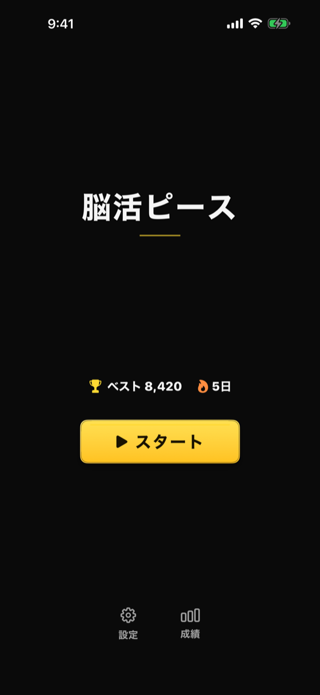

タイトル画面・ナビゲーション起点

| 要素 | 説明 |
|---|---|
| アプリ名「PieceZen」 | グラデーション表示 |
| ベストスコア | HighScoreRecord から取得 |
| ストリーク | 連続プレイ日数 |
| Playボタン | GameView へ遷移 |
| 設定ボタン（Settings） | SettingsView へ。画面下部に「成績」ボタンと横並び |
| 成績ボタン（Statistics） | StatisticsView へ |
| 背景 | ZenParticleBackground（パーティクルアニメ） |
| 項目 | v1.5.1 まで | v1.5.2〜 |
|---|---|---|
| 見た目 | アイコン＋文字のみ（背景なし） | カード型（盤面と同じ面の色の角丸背景＋細い枠線） |
| タップ領域 | アイコンと文字の大きさのみ | 幅 88pt 以上 × 高さ 48pt 以上。カード全体がタップ領域 |
| 2つのボタンの間隔 | 56pt | 32pt |
ラベルは「設定」「成績」。VoiceOver では「設定画面を開く」「統計画面を開く」と読み上げる。
| 操作 | 遷移先 |
|---|---|
| Play | GameView |
| Settings | SettingsView |
| Statistics | StatisticsView |
| バージョン | 日付 | 変更内容 |
|---|---|---|
| 1.0 | 2026-05-09 | 初版作成 |
| 1.1 | 2026-06-10 | 画面イメージ（fastlane snapshot 自動撮影）を追加 |
| 1.2 | 2026-09-29 | v1.5.2 対応: 下部の「設定」「成績」ボタンをカード型にし、タップ領域を幅 88pt 以上 × 高さ 48pt 以上に広げた変更を反映（間隔 56pt → 32pt） |